Problem
Students eating between classes can't tell whether a place fits their break, diet and meal plan without checking several apps.
What I did
Turned usability-test notes into a redesign of three screens, built the results-to-decision half of the Figma prototype, and created the first AI-assisted prototype of a guided alternative.
Where it stands
Each redesign change answers one of the three problems testers hit. A cognitive walkthrough found four more issues, all fixed. Next is a head-to-head test of the two versions.
Students have 15 minutes and four places to look
ASU students often eat in the gap between classes. Dining information is spread across Google Maps, ASU Dining pages, and word of mouth, and none of them answer the question that matters in that moment: can I get food here and still be on time?
Our team interviewed four students who eat on campus. What they described, paraphrased:
Designing for a phone checked between buildings
People
Students are the primary users and staff are secondary. They differ in diet (vegetarian, vegan, halal, kosher, allergies), budget, schedule, and how well they know campus. Some need wheelchair-accessible locations.
Context
The app is used while walking between classes or on a short break, usually alone and sometimes with a group. Opening hours, line length, crowding, and whether a place takes M&G or meal swipes all decide what is practical.
This set the tradeoff the team designed around: a student with 15 minutes cares about distance and wait time, while a student with an hour cares about cuisine and price. Too much information on screen overwhelms the first student, and too little fails the second.
Five tasks from the interviews
I turned the interview findings into five task descriptions. A teammate checked them with three more students, which led us to make comparison handle several places at once and to add price and meal-plan balance.
- 1Find food that fits the time availableRequired
- 2Find food that matches dietary needsHigh
- 3Compare nearby places before choosingHigh
- 4Check the menu and what's available before goingHigh
- 5Choose a place that works for a groupSecondary
We sketched two concepts, a search-and-filter directory and personalized recommendations, and chose search and filter because it gives students direct control over what they see.
Three students, three tasks, no help
The team drew a storyboard, a horizontal prototype covering the start of all five tasks, and a vertical prototype covering one full task: set your time and diet, see results, check a place, go. Three students outside the team each tried one task on paper while a teammate observed.
- A vegan student found the diet filter but couldn't tell which restaurants had vegan meals.
- A student short on time liked the time filter but had to add walk and wait times in his head.
- A student comparing two places had to switch between pages to see them side by side.
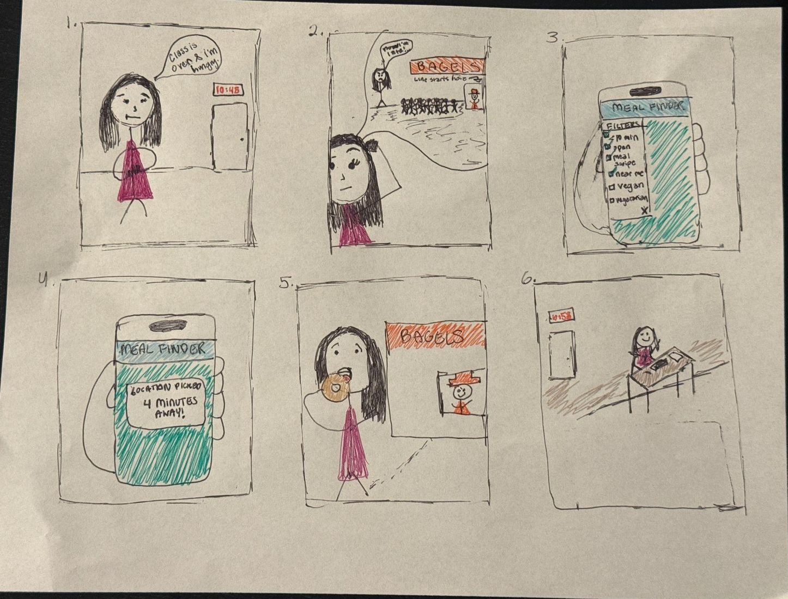
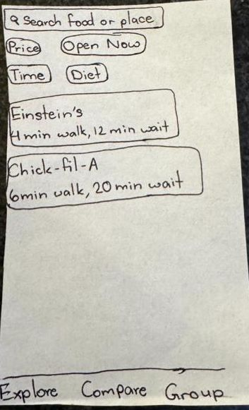
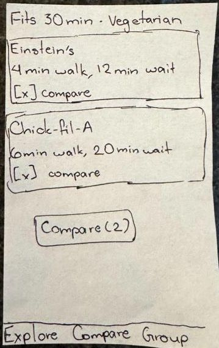
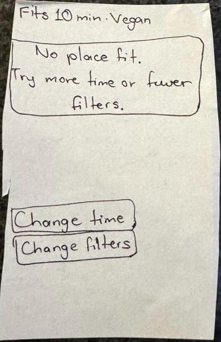
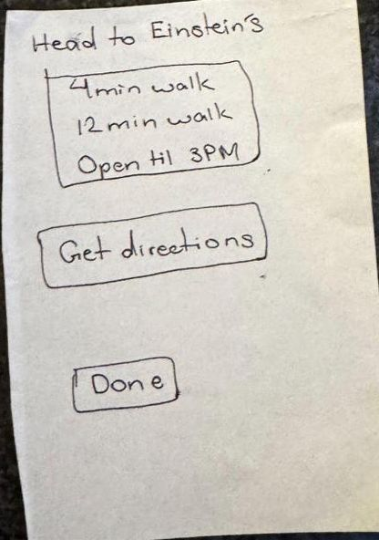
Turning test notes into three redrawn screens
I collected the test notes, decided what to change, redrew the affected screens, and wrote the rationale. Every change traces back to something a participant struggled with.
Results
V4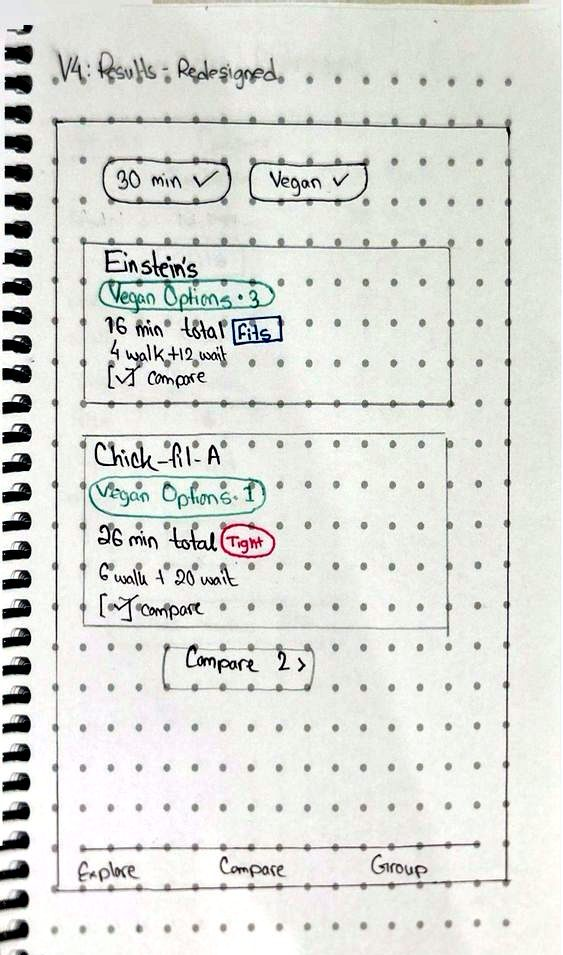
What changed
- Each card shows how many vegan options a place has (Einstein's 3, Chick-fil-A 1).
- Walk and wait are added into one total, marked Fits or Tight, and results are sorted by total time.
- Active filters sit at the top as checked chips, which also fixed a header that said "Vegetarian" when the filter was vegan.
Why
- The vegan tester had to open each place to check. Labels on the card let her see it at a glance.
- The tester short on time was doing arithmetic. The total answers his real question directly.
Compare
H4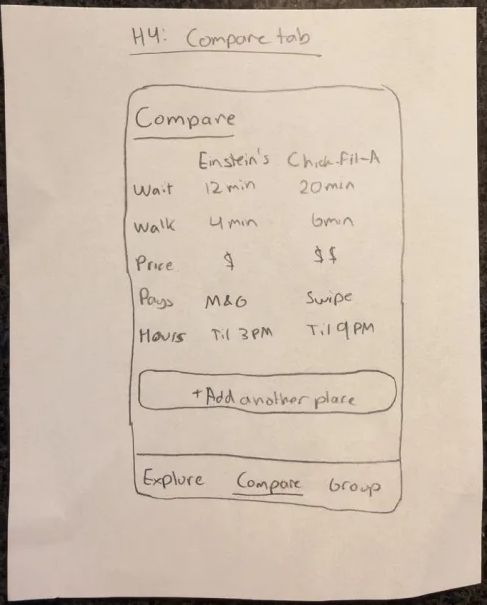
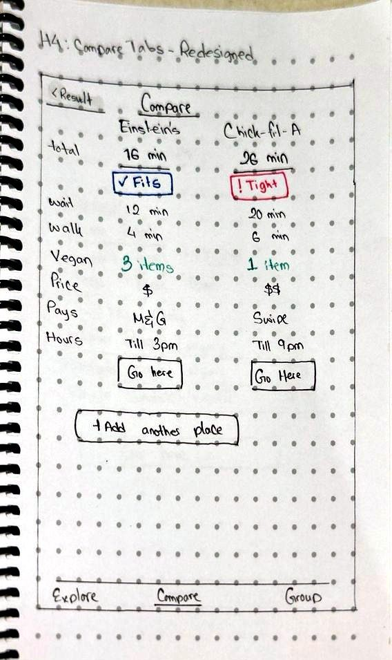
What changed
- Added total time, vegan option count, and Fits/Tight to each column.
- Added a "Go here" button per column and a link back to results that keeps the selections.
- Reused the existing compare screen instead of drawing a new one, so comparing looks the same from Results or the Compare tab.
Why
- The comparison tester had to leave the comparison to make a choice. Now he can decide from it.
Place page
V5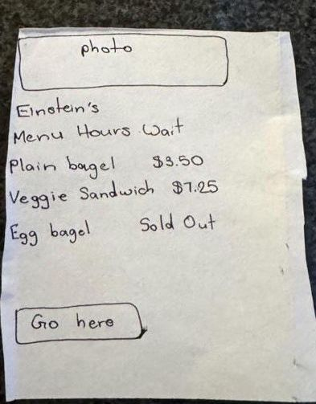
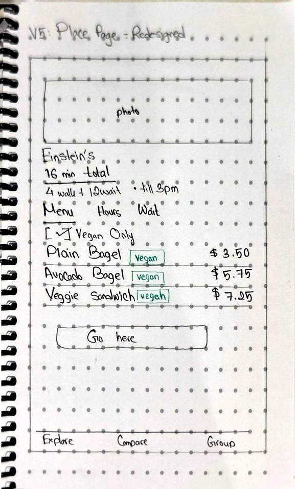
What changed
- Vegan labels sit beside individual menu items.
- The "Vegan only" filter carries over from Results, so non-vegan items stay hidden.
Why
- Users shouldn't have to pick the same filter twice on the way to a decision.
I used color only for information that was new in the redesign, one meaning per color:
Diet labels Fits TightBuilding the decision flow in Figma
The team split the vertical prototype. A teammate built Home and the two filters; I built the second half and then linked and tested the full flow. Everything uses the team's shared components. Figma can't filter real data, so I used variables and conditionals to simulate selections and state. The screens below are as I built them, before the walkthrough fixes in the next section.
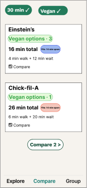
Results
Selected filters stay visible. Each card has vegan counts, walk and wait times with Fits/Tight, and a compare checkbox feeding a "Compare 2" button.
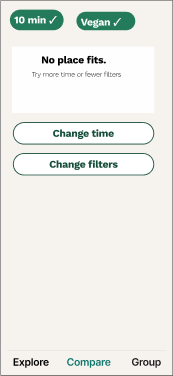
No results
"No place fits" with direct options to change the time or the filters, so users aren't left at a dead end.
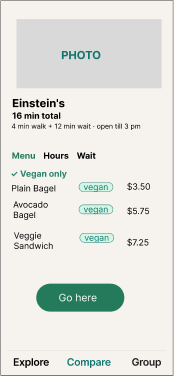
Place page
Menu, Hours and Wait tabs, with vegan labels on menu items.
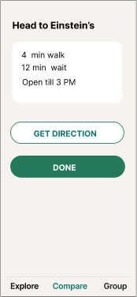
Decision
"Head to Einstein's" with walk time, wait time and closing time, plus Get directions and Done.
What the walkthrough caught, including in my screens
A teammate walked the full task (find a vegan place that fits a 30-minute break) and asked the four cognitive walkthrough questions at each step. Two of the four issues were in screens I built.
| Issue | Principle | Fix |
|---|---|---|
| The Time and Diet chips on Home were gray on gray and looked like labels, not buttons. | Visibility, affordance | Teal outline and an icon on both chips. |
| "Show places that fit" promised results before the diet step, and the time options had no units. | Match with expectations, error prevention | Renamed the button "Next: Diet". |
| Fits and Tight relied on color alone, and "Tight" was never explained.My screen | Accessibility, cognitive load | Spelled it out: "Tight: 4 min spare". |
| The second half used a different font and background, and the decision buttons were all caps.My screens | Consistency, system status | Sentence-case buttons ("Get directions", "Done") and matching navigation styles. |
Revisiting the concept we passed on
In September we chose filters over personalized recommendations. I created the first AI-assisted Figma prototype from our proposal and task requirements to test the other direction properly: a short guided flow that asks about time, diet and budget, then recommends a few places with a one-line reason each. It covered 11 screens, from a solo-or-group welcome to a no-results screen with alternatives. Teammates then refined the screens and made them interactive.
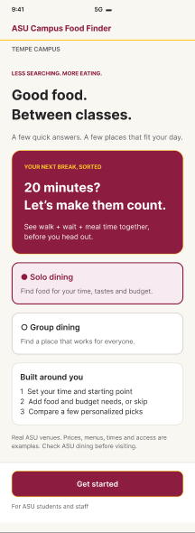
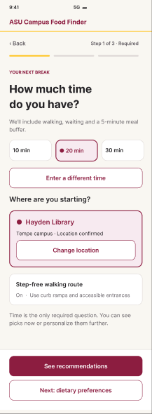
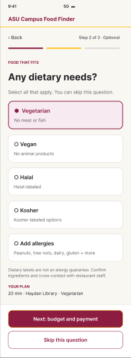
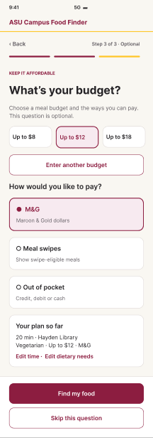
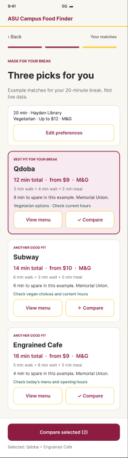
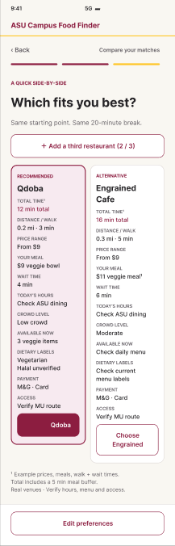
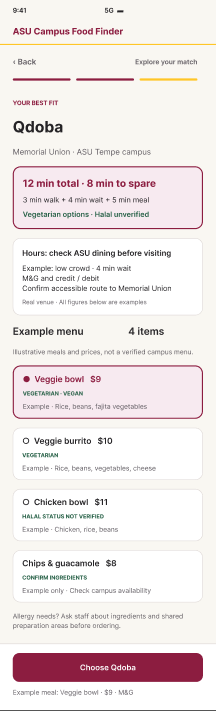
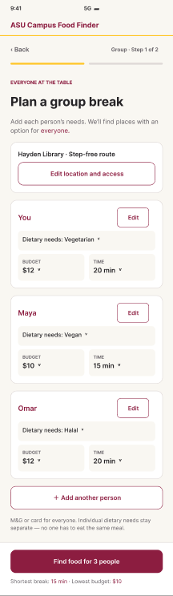
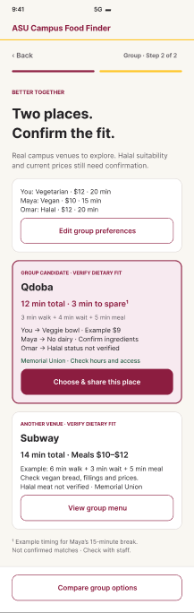
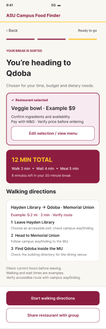
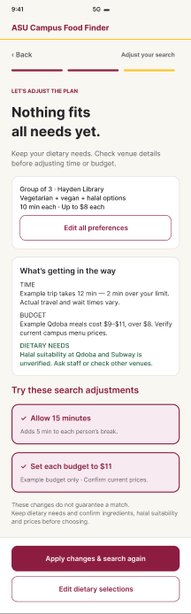
Screens captured from the Figma file. Use the link below to click through the prototype.
Faster for returning users
Restaurants show up on Home right away and filters adjust in place. Fewer screens and taps, but the walkthrough showed the filter chips were easy to miss.
Clearer for first-time users
One question per screen, a progress bar, and exact time math such as 12 min total · 8 min to spare instead of color alone. More taps.
Testing the two versions against each other
Design question: does the guided flow help first-time users pick a place that fits their break and diet more accurately than the filter version, and how much extra time does it cost?
We expect fewer errors and higher confidence with the guided flow, at the cost of a longer task. Results go here when the test is done.
Participants
4–6 ASU students who eat on campus between classes, new to both prototypes
Task
"You have a 30-minute break and you eat vegan. Find a place that fits and get directions."
Order
Half start with each version to control for learning
Measures
Completion, time on task, taps, errors, and a 1–7 ease rating
What I've learned
Color can't carry meaning by itself.
My Fits/Tight marker made sense to me and still failed the walkthrough. Writing "4 min spare" works for everyone, including people who can't tell red from blue.
Answer the question the user is actually asking.
Students don't want walk time and wait time. They want to know if they'll make it to class. Doing that addition for them was the most useful change in the redesign.
Reuse a screen before designing a new one.
Reusing the compare screen kept the app consistent and meant one less screen for users to learn.
AI is good for exploring a direction, not for deciding.
The generated prototype gave us a complete alternative to compare against, but it still needed the same heuristic review as our hand-built screens.